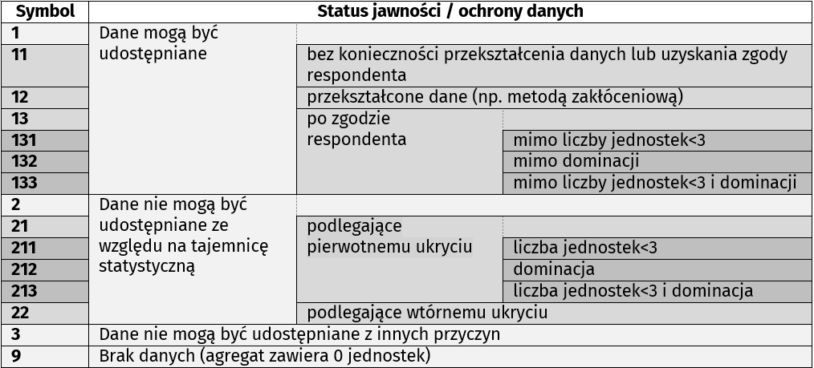

4 Metodologiczne zasady ochrony tajemnicy statystycznej
4.1 Miejsce, rola i znaczenie ochrony tajemnicy statystycznej w przyjętym Modelu Procesu Produkcji Statystycznej
Model Procesu Produkcji Statystycznej (MPPS) to krajowa implementacja generycznego modelu procesu produkcji statystycznej – ang. Generic Statistical Business Process Model (GSBPM)1 – wzbogacona o komponenty geoprzestrzenne (oznaczone na poniższym schemacie na żółto), podprocesy weryfikacji i oceny jakości (oznaczone na zielono) oraz podprocesy planowania (oznaczone na niebiesko). GSBPM jest uznawany za branżowy standard wypracowany przez UNECE i wdrażany na świecie w ponad 80 krajach przez instytucje statystyki publicznej. GSBPM opiera się na podejściu procesowym, charakteryzującym się elastycznością i innowacyjnością. Koncentruje się na całych procesach, a nie na wybranych aspektach funkcjonowania organizacji. Model Procesu Produkcji Statystycznej umieszczony w załączniku do zarządzenia wewnętrznego Prezesa GUS w sprawie ustanowienia Polityki postępowania z danymi statystycznymi jest następujący:
1 Generic Statistical Business Process Model GSBPM (Version 5.1, January 2019) https://statswiki.unece.org/display/GSBPM/GSBPM+v5.1 (dostęp 16.12.2022).
Źródło: opracowanie własne na podstawie Polityki postępowania z danymi statystycznymi (Załącznik do zarządzenia wewnętrznego nr 32 z dnia 4 grudnia 2020 r. Prezesa GUS w sprawie ustanowienia Polityki postępowania z danymi statystycznymi (z późn. zm.)).
W powyższym modelu czerwonymi obwódkami zaznaczono podprocesy produkcji statystycznej, w których, zdaniem Zespołu, konieczność uwzględnienia metod kontroli ujawniania danych statystycznych jest najbardziej oczywista. Ponadto metody te mogą znaleźć swoje miejsce również m.in. w podprocesach 1.7, 1.8, 1.9, 2.3, 2.6, 2.7, 2.8, 3.2, 3.3, 3.4, 3.5, 3.6, 3.7, 3.8, 5.1, 5.2, 5.8, 6.1, 6.2, 6.3, 7.1, 7.2a, 7.5, 7.6, 7.7, 8.1, 8.2, 8.3.
Podkreślić także należy, że GSBPM umieszcza obecnie uwzględnienie metod kontroli ujawniania danych w następujących jego fazach: projektowania, przetwarzania, analizy i udostępniania. Ma to także odzwierciedlenie w polskiej wersji modelu procesu produkcji statystycznej, który dla fazy 2. – PROJEKTOWANIE wskazuje m.in. na następujące działania:
- zaprojektowanie rozwiązań i narzędzi informatycznych pozwalających na wytworzenie informacji wynikowych (ust. 3),
- opracowywanie założeń, w celu budowy lub modyfikacji narzędzi informatycznych wspierających realizację badań, zawierających m.in. wyszczególnienie kategorii danych występujących w badaniu (inaczej status danych), np. chronione w trakcie opracowania dane jednostkowe (identyfikowalne, nieidentyfikowalne), dane osobowe, a także podanie wytycznych dotyczących ochrony poszczególnych kategorii danych, np. podstawę prawną ochrony danych, algorytmy służące do zapewnienia ochrony tajemnicy statystycznej (ust. 4),
- dokonanie rozpoznania i doboru właściwej metody bądź metod przez jednostkę autorską, zapewniających stosowanie zasad tajemnicy statystycznej w danych wynikowych planowanych do udostępnienia, w celu zapewnienia poufności danych statystycznych, w tym wskazanie zmiennych charakteryzujące wyniki ekonomiczno-finansowe, według których badany jest udział podmiotu w agregacie, a także poprzedzenie wyboru ww. metody bądź metod przez jednostkę autorską oceną ryzyka ujawnienia informacji poufnych z jednoczesną oceną ponoszonej straty informacji (ust. 5).
W obecnie obowiązującej Polityce postępowania z danymi… fazy 5 i 6 PRZETWARZANIE i ANALIZA są opisane łącznie i spośród szeregu działań podejmowanych w tych fazach, istotne znaczenie z punktu widzenia ochrony tajemnicy statystycznej mają m. in.:
- pseudonimizacja danych (ust. 2),
- ochrona danych osobowych (ust. 3),
- stosowanie reguł zapewniających zachowanie tajemnicy statystycznej (ust. 7),
- zapewnienie zachowania tajemnicy statystycznej poprzez stosowanie odpowiednich metod kontroli ujawniania danych przez jednostkę autorską, a także prawidłową ochronę tajemnicy statystycznej zgodnie z wymogami jednostki autorskiej przez jednostkę publikująca dane, która nie jest jednostką autorską badania (ust. 15),
- dostosowanie stosowanych metod zapewnianiających zachowanie tajemnicy statystycznej i zakresu ich wykorzystania do sposobu i celu udostępniania danych (ust. 16),
- ocena ryzyka ujawnienia informacji podlegających tajemnicy oraz ocena straty informacji danych wynikowych ponoszonej w wyniku zastosowania metod kontroli ujawniania danych (ust. 16),
- pokazanie obok oryginalnych wartości, odpowiedniego oznaczenia danych po zastosowaniu metod kontroli ujawniania danych, jeżeli w zbiorach danych przeznaczonych dla użytkowników wewnętrznych zostały one zastosowane (ust. 16),
- przekazanie przez jednostkę autorską badania jednostce naliczającej dane wszelkich dodatkowych wytycznych metodologicznych dotyczących realizowanego naliczenia, w tym w szczególności dotyczących zastosowanych reguł służących ochronie tajemnicy statystycznej w przypadku wystąpienia konieczności dodatkowego naliczenia danych na zbiorze krajowym (tj. w przekrojach innych, niż określone w założeniach do systemu informatycznego badania) (ust. 29),
- naliczenie zbiorów przez jednostkę realizującą prace w oparciu o art. 21 ust. 2 ustawy o statystyce publicznej dla działań dotyczących przygotowania zbiorów poniżej szczebla administracyjnego – województwo oraz statystycznego – NUTS 2 oraz przyjęcie przez nią odpowiedzialności w zakresie zastosowanych zasad i metod ochrony tajemnicy statystycznej, a także zachowanie spójności z danymi na wyższych poziomach agregacji przestrzennej udostępnianymi przez jednostkę autorską (ust. 30).
Działania związane z ochroną tajemnicy statystycznej podejmowane w fazie 7 – UDOSTĘPNIANIE obejmują stosowanie zasad2 rozpowszechniania wynikowych informacji statystycznych opierających się na:
2 Przewodnik rozdział 3. Podstawy prawne tajemnicy statystycznej.
- Rozporządzeniu Parlamentu Europejskiego i Rady (WE) Nr 223/2009 z dnia 11 marca 2009 r. w sprawie statystyki europejskiej,
- Europejskim Kodeksie Praktyk Statystycznych (EKPS)3,
- Ustawie.
3 Europejski Kodeks Praktyk Statystycznych: https://bip.stat.gov.pl/files/gfx/bip/pl/defaultstronaopisowa/667/1/1/europejski_kodeks_praktyk_statystycznych_2.pdf (dostęp 27.12.2022).
W kontekście stosowania metod kontroli ujawniania danych należy także wskazać na ważne znaczenie jednego z działań opisanych w fazie 8 – OCENA. Chodzi tutaj o zastosowanie mierników jakości do pomiaru, oceny oraz monitorowania jakości badań statystycznych w służbach statystyki publicznej. Wśród tych mierników szczególne miejsce zajmują mierniki straty informacji ponoszonej na skutek zastosowania kontroli ujawniania danych (ust. 2 pkt 2).
W odniesieniu do przywołanego powyżej modelu procesu produkcji statystycznej należy zaznaczyć, że wymienione powyżej działania mogą obejmować nie tylko pierwotne i wtórne ukrywanie wrażliwych przekrojów tablic, ale także zastosowanie metod zakłóceniowych oraz kontrolę ujawniania wyników analiz prezentowanych w różnych formach (w tym analiz przestrzennych i map). Inne podejście będzie także konieczne w przypadku danych jednostkowych, inne w przypadku danych zagregowanych prezentowanych w tablicach statystycznych, a jeszcze inne w przypadku komentarzy analitycznych, infografik, czy kartogramów (przy zachowaniu spójności wyników wykonanego ukrycia danych prezentowanych w różnych formach – tablicach czy np. formie graficznej).
4.2 Zasady zachowania tajemnicy statystycznej poprzez zastosowanie odpowiednich metod kontroli ujawniania danych statystycznych stosowane w statystyce publicznej
4.2.1 Zasady ogólne
W praktyce za przygotowanie publikowanych i udostępnianych użytkownikom zewnętrznym wynikowych informacji statystycznych, zgodnie z zasadami zachowania tajemnicy statystycznej, o których mowa w Ustawie, odpowiadają jednostki autorskie (w zakresie pierwotnego i wtórnego ukrywania danych udostępnianych przez te jednostki). Oznaczanie tajemnicy statystycznej lub ukrywanie przekrojów objętych tajemnicą dla danych przekazywanych do Eurostatu jest wykonywane zgodnie z odpowiednimi rozporządzeniami i wytycznymi UE. Udostępnianie danych przez jednostki autorskie innym jednostkom i komórkom organizacyjnym GUS zostało opisane w rozdziale 4.2.2.
Jednostki służb statystyki publicznej, inne niż jednostka autorska, które przygotowują do publikowania i udostępnienia wynikowe informacje statystyczne, dla których wcześniej nie wykonano kontroli ujawniania danych statystycznych (inne niż otrzymane od jednostki autorskiej wynikowe informacje statystyczne z oznaczoną tajemnicą statystyczną do celów publikacyjnych, o których mowa w rozdziale 4.2.2.), wyznaczając przekroje objęte tajemnicą statystyczną, uwzględniają ogólne zasady stosowania metod kontroli ujawniania danych statystycznych zawarte w niniejszym dokumencie (pkt 4.2) oraz stosują się do zasad wprowadzanych przez jednostki autorskie w SMS. Ponadto biorą pod uwagę wyniki kontroli ujawniania danych statystycznych przeprowadzonej dla agregatów w podstawowych zestawach danych publikowanych przez jednostki autorskie (określonych w PBSSP), zarówno np. w publikacjach, jak i w systemach udostępniania danych. W razie braku informacji wystarczających do przeprowadzenia kontroli ujawniania danych statystycznych lub odpowiedniego punktu odniesienia w publikacjach jednostki autorskiej, jednostka służb statystyki publicznej, która planuje opublikowanie wynikowych informacji statystycznych może zwrócić się z prośbą o pomoc lub konsultacje w tym zakresie do jednostki autorskiej.
Kontrola ujawniania danych statystycznych dla danych imputowanych jest wykonywana na zasadach przyjętych dla danych, które nie są imputowane.
Kontrola ujawniania danych statystycznych (czy dane podlegają pierwotnemu lub wtórnemu ukrywaniu) jest przeprowadzana dla wszystkich agregatów, w których występuje ryzyko ujawnienia danych podlegających ochronie tajemnicy statystycznej, bez względu na poziom agregacji i stosowane jednostki miary.
W badaniach zjawisk występujących tylko w części populacji osób fizycznych i podmiotów gospodarki narodowej objętych danym badaniem (np. nakłady inwestycyjne w badaniu bieżących wyników finansowych i nakładów na środki trwałe) lub występujących okresowo, analiza kontroli ujawniania danych statystycznych dla danego agregatu powinna objąć zbiorowość wszystkich osób lub podmiotów objętych badaniem w tym agregacie, a nie tylko te osoby lub podmioty, w których zjawisko wystąpiło.
Dane dla zmiennej np. „Liczba podmiotów gospodarki narodowej” lub „Liczba osób fizycznych”, informującej o liczebności zbiorowości, której dotyczą poszczególne zmienne, mogą pozostać jawne, o ile informacja o liczbie jednostek w szczegółowo określonym przekroju nie prowadzi do ujawnienia danych podlegających ochronie tajemnicy statystycznej, w tym wyników ekonomiczno-finansowych podmiotu prowadzącego działalność gospodarczą lub pozwalających na zidentyfikowanie konkretnej osoby fizycznej.
Wskaźniki dynamiki oraz wskaźniki ilorazowe (np. dynamika produkcji sprzedanej przemysłu, wskaźnik rentowności) mogą być publikowane, jeśli oba elementy (licznik i mianownik) wykorzystane do obliczeń danego wskaźnika nie podlegają ochronie przed ujawnieniem, tzn. nie można publikować wskaźnika, jeśli licznik lub mianownik, lub zarówno licznik, jak i mianownik , są objęte tajemnicą statystyczną (podlegają pierwotnemu lub wtórnemu ukrywaniu).
W przypadku wskaźników struktury, wskaźniki te mogą być publikowane, jeśli wartość ogółem oraz wszystkie elementy składowe nie są objęte tajemnicą statystyczną.
W przypadku danych dotyczących szeregów czasowych skumulowanych (tzw. danych narastających) należy uwzględniać wyniki kontroli ujawnienia danych statystycznych wykonanej w poprzednich okresach objętych kumulacją, w tym w zakresie tajemnicy podlegającej wtórnemu ukrywaniu.
Dane charakteryzujące wyniki ekonomiczno-finansowe działalności podmiotów gospodarczych prowadzących działalność gospodarczą udostępniane są zgodnie z art. 38 ust. 2. Oznacza to zakaz udostępniania jednostkowych danych identyfikowalnych i nieidentyfikowalnych charakteryzujących wyniki ekonomiczno-finansowe działalności podmiotów gospodarczych prowadzących działalność gospodarczą. Zasady te stosuje się również do udostępniania informacji o produkcji wyrobów w ujęciu wartościowym. Zmienne/zestawy danych, które w poszczególnych badaniach charakteryzują wyniki ekonomiczno-finansowe podmiotów gospodarki narodowej prowadzących działalność gospodarczą w rozumieniu art. 38 ust. 2 Ustawy, są wskazane w SMS.
Dane dotyczące działalności podmiotów gospodarki narodowej prowadzących działalność gospodarczą odnoszące się do rzeczowych wyników działalności , jako dane niestanowiące charakterystyki wyników ekonomiczno-finansowych, nie są obejmowane powyższymi zasadami kontroli ujawniania danych statystycznych, ale – jak każde dane statystyczne – są objęte ochroną przed ujawnieniem. W związku z powyższym, powinny być chronione przed ujawnieniem, ale nie podlegają kryteriom zapisanym w art. 38 ust. 2 Ustawy. Dane te w postaci agregatów mogą więc być udostępniane bez względu na liczbę podmiotów wchodzących w skład agregatu lub występowanie dominacji na poziomie ogólnopolskim, ale bez prezentacji informacji identyfikujących respondenta (takich jak np. nazwa, adres, numer identyfikacyjny, itp.). Jednak aby zachować ochronę tych danych statystycznych przed ujawnieniem (bezpośrednim lub pośrednim), w ujęciu terytorialnym, gdzie ryzyko identyfikacji producenta jest bardziej znaczące, stosowane są kryteria zapisane w art. 38 ust. 2 Ustawy. Zmienne/zestawy danych, które w poszczególnych badaniach nie charakteryzują wyników ekonomiczno-finansowych podmiotów gospodarki narodowej prowadzących działalność gospodarczą w rozumieniu art. 38 ust. 2 Ustawy, są wskazane w SMS .
Mogą być rozpowszechniane dane z zakresu międzynarodowego handlu towarami umożliwiające identyfikację importera lub eksportera o ile podmiot nie zgłosi braku zgody na ich ujawnianie, zgodnie z art. 19 rozporządzenia Parlamentu Europejskiego i Rady (WE) 2019/2152 z dnia 27 listopada 2019 r. w sprawie europejskiej statystyki gospodarczej: Wyłącznie na wniosek importera lub eksportera towarów krajowy organ statystyczny decyduje o tym, czy rozpowszechniać wyniki statystyczne odnoszące się do odpowiedniego przywozu lub wywozu bez jakiejkolwiek zmiany lub czy – na uzasadniony wniosek tego importera lub eksportera – zmienić wyniki statystyczne, tak aby uniemożliwić identyfikację tego importera lub eksportera w celu zapewnienia poszanowania zasady poufności informacji statystycznych, zgodnie z art. 20 ust. 3 lit. a) rozporządzenia (WE) nr 223/2009.
Dane z systemów informacyjnych administracji publicznej i rejestrów urzędowych lub niepublicznych systemów informacyjnych, wykorzystywane w danym badaniu statystycznym, podlegają zasadom kontroli ujawniania danych statystycznych przyjętym dla tego badania i danego rodzaju zmiennych. Jeśli wskazane powyżej zasady tego wymagają, dla wynikowych informacji statystycznych przygotowanych z wykorzystaniem danych z systemów informacyjnych administracji publicznej i rejestrów urzędowych lub niepublicznych systemów informacyjnych wykonywana jest kontrola ujawniania danych statystycznych (z uwzględnieniem pierwotnego i wtórnego ukrywania przekrojów). Zasady kontroli ujawniania danych statystycznych dla otrzymanych danych są ustalane przez jednostkę autorską badania, w którym są one wykorzystywane.
Jeśli jednostki statystyki publicznej prowadzą w ramach PBSSP badania wspólne wraz z jednostkami spoza statystyki publicznej, wówczas zasady kontroli ujawniania danych statystycznych powinny być w spójny sposób stosowane również przez jednostki spoza statystyki publicznej przy opracowaniu i publikacji wyników tych badań.
Jeśli jednostka zewnętrzna występuje o udostępnienie danych zagregowanych, opracowania lub analizy dotyczącej przedstawionej przez nią listy jednostek i dane te dotyczą zmiennych, które są obejmowane kontrolą ujawniania danych statystycznych, to takie informacje nie mogą być udostępnione dla pełnej listy jednostek przekazanej przez zamawiającego. Mogą być udostępniane agregaty opracowane tylko dla podzbioru przedstawionej listy, a nie dla 100% wskazanych na niej jednostek. W przypadku danych charakteryzujących wyniki ekonomiczno-finansowe podmiotów gospodarki narodowej prowadzących działalność gospodarczą, dane naliczone dla powyższego podzbioru nie powinny zawierać informacji dotyczących mniej niż trzech jednostek z przedstawionej listy ogółem lub agregatu, w którym udział jednego podmiotu wynosi więcej niż 75% całości na poziomie ogółem. Ponadto, zamawiający nie może być informowany, których jednostek z listy dane dotyczą (lub nie dotyczą). Przy udostępnianiu zamawiającemu powyższych agregatów trzeba wykonać kontrolę ujawniania danych statystycznych (z uwzględnieniem pierwotnego i wtórnego ukrywania przekrojów).
Użytkownik zewnętrzny otrzymuje dane, w tym przygotowane na zamówienie, po przeprowadzeniu kontroli ujawniania danych statystycznych (tj. z wyłączeniem z udostępnianych zbiorów danych objętych pierwotnym lub wtórnym ukrywaniem). Wskazane jest poinformowanie zamawiającego już na etapie opiniowania zamówienia, że kontrola ujawniania danych statystycznych może wpłynąć na zakres udostępnianych danych oraz podanie szacunku oczekiwanego poziomu straty informacji powstałej na skutek tej kontroli. Jeżeli strata informacji została określona i przekazana zamawiającemu dla danych z wcześniejszej edycji udostępniania danych i nie zaszły żadne zmiany w zakresie udostępnianych danych ani w stosowanej metodologii kontroli ujawniania danych, wówczas można odstąpić od ponownego szacowania przewidywanego poziomu straty informacji.
Szczegółowe informacje (poza sformułowanymi w Ustawie) o parametrach metod kontroli ujawniania danych statystycznych stosowanych przez statystykę publiczną, które mogłyby być wykorzystane przez użytkowników zewnętrznych do ujawnienia tajemnicy statystycznej, nie są udostępniane użytkownikom zewnętrznym. Nie powinna być także udostępniana informacja dotycząca szacunków ryzyka ujawnienia danych podlegających ochronie. Użytkownikowi zewnętrznemu należy udostępnić informację o stracie informacji wynikającej ze stosowanej kontroli ujawniania danych statystycznych. Jeżeli ryzyko utraty informacji zostało określone dla danych wcześniejszej edycji udostępniania danych i nie zaszły żadne zmiany w zakresie udostępnianych danych ani w stosowanej metodologii kontroli ujawniania danych, wówczas można odstąpić od ponownego naliczania ryzyka utraty informacji.
Odrębne zasady postępowania z danymi statystycznymi regulują, oprócz Ustawy, dokumenty określające współpracę GUS z Narodowym Bankiem Polskim na podstawie art. 21a i art. 21b Ustawy, rozporządzenie w sprawie statystyki europejskiej i rozporządzenie w sprawie europejskiej statystyki gospodarczej (EBS) oraz inne zobowiązania wobec organizacji międzynarodowych.
4.2.2 Zasady kontroli ujawniania zagregowanych danych statystycznych opracowywanych w tablicach
Przygotowując założenia do tablic, jednostka autorska zobowiązana jest do określenia założeń do kontroli ujawniania danych statystycznych dla źródłowych danych przewidzianych przez tę jednostkę autorską do udostępniania (a przynajmniej dla opracowywanych tablic publikacyjnych oraz tych tablic wynikowych – przekazywanych innym jednostkom służb statystyki publicznej – które mają być następnie bezpośrednio opublikowane). Założenia do kontroli ujawniania danych statystycznych powinny dotyczyć wszystkich danych objętych tajemnicą statystyczną (nie tylko charakteryzujących wyniki ekonomiczno-finansowe podmiotów gospodarki narodowej prowadzących działalność gospodarczą). W szczególności, jednostka autorska:
określa (zgodnie z informacjami wprowadzonymi w SMS) zmienne w badaniu, które są objęte szczególną ochroną przed ujawnieniem (np. wskazuje zmienne charakteryzujące wyniki ekonomiczno-finansowe podmiotów gospodarki narodowej prowadzących działalność gospodarczą),
w przypadku zmiennych charakteryzujących wyniki ekonomiczno-finansowe podmiotów gospodarki narodowej prowadzących działalność gospodarczą przyjmuje założenia do kontroli ujawniania danych statystycznych zgodne z art. 38 ust. 2 Ustawy (na tych zasadach oparto poniższe wytyczne),
w przypadku pozostałych danych statystycznych stosuje się (jest to zalecane) do zasad zawartych w art. 38 ust. 2 Ustawy (mniej niż 3 podmioty i dominacja więcej niż 75%), jednak możliwe jest wyznaczenie przez jednostkę autorską innych zasad, właściwych dla specyfiki tego rodzaju danych, ale jednocześnie zapewniających ochronę danych statystycznych objętych tajemnicą statystyczną przed ujawnieniem (informacja o przyjętych, w tym odmiennych zasadach powinna zostać zawarta w SMS),
w przypadku zmiennych charakteryzujących wyniki ekonomiczno-finansowe podmiotów gospodarki narodowej (oraz innych zmiennych, gdy jest to niezbędne do przeprowadzenia kontroli ujawniania danych statystycznych według przyjętych dla tych zmiennych zasad) – określa wytyczne do oznaczania agregatów zawierających dane pochodzące z mniej niż 3 jednostek (1 lub 2) – podlegające pierwotnemu ukryciu,
w przypadku zmiennych charakteryzujących wyniki ekonomiczno-finansowe podmiotów gospodarki narodowej (oraz innych zmiennych, gdy jest to niezbędne do przeprowadzenia kontroli ujawniania danych statystycznych według przyjętych dla tych zmiennych zasad) – określa zmienne (jedną lub więcej), według których badane jest wystąpienie dominacji (w związku z ukryciem pierwotnym) w agregatach danego zbioru ze źródłowymi danymi oraz podaje algorytmy do badania dominacji; oznaczane są agregaty zawierające wartość pochodzącą od jednej jednostki, której udział w agregacie, wyrażony w procentach i wyliczany z dokładnością do dwóch miejsc po przecinku, jest większy niż 75,00% całego agregatu. Jeśli na podstawie takiej zmiennej/zmiennych zostanie ustalona konieczność ukrycia danego agregatu, to w ramach tego agregatu ochroną objęte są wszystkie zmienne, które (zgodnie z poniższymi zasadami ogólnymi i informacjami zawartymi w SMS) podlegają ochronie przed ujawnieniem. Możliwe jest wskazanie przez jednostkę autorską wybranej jednej lub kilku zmiennych, dla których sprawdzana jest dominacja, i ta dominacja jest podstawą do objęcia ochroną pozostałych zmiennych dla tego agregatu, przy założeniu, że informacja o dominacji dla wskazanej zmiennej/zmiennych jest właściwa dla całego zestawu zmiennych, które na tej podstawie są obejmowane ochroną. W ramach danego agregatu nie są obejmowane ochroną zmienne, które zgodnie z zasadami i informacjami w SMS nie podlegają ochronie przed ujawnieniem lub są obejmowane ochroną na innych zasadach (np. dane ilościowe o produkcji).
w przypadku stwierdzenia, dla zmiennej będącej podstawą badania dominacji, wartości zerowych dla wszystkich podmiotów w agregacie, odstępuje od badania dominacji dla tego agregatu.
W poniższej tabeli 1. przedstawiono przykład dla agregatu obejmującego 3 podmioty:
- w przypadku stwierdzenia wartości ujemnej w danych jednostkowych będących podstawą badania dominacji, na potrzeby obliczenia dominacji wykorzystuje wartości bezwzględne.
W poniższej tabeli 2. przedstawiono przykład dla agregatu obejmującego 3 podmioty:
określa ukrycie wtórne – wytyczne do wyznaczania agregatów, które należy dodatkowo objąć ochroną ze względu na możliwość odkrycia oznaczonej na pierwszym etapie tajemnicy podlegającej pierwotnemu ukryciu,
określa zasady kontroli ujawnienia danych statystycznych po uwzględnieniu zgód uzyskanych od respondentów – podmiotów gospodarki narodowej – na publikowanie danych (art. 38 ust. 3 Ustawy), a także wprowadza odpowiednie oznaczenia komórek objętych ostatecznie ochroną przed ujawnieniem w tablicach (w tym wprowadza oznaczenia tajemnicy publikacyjnej – wynikającej z Ustawy po uwzględnieniu zgód udzielonych przez respondentów); powyższe zasady są przygotowywane w przypadku danych, dla których wykorzystywane jest pozyskiwanie zgód od respondentów; tryb postępowania w celu pozyskania zgody na opublikowanie określonych danych charakteryzujących wyniki ekonomiczno-finansowe podmiotów gospodarki narodowej został opisany w rozdziale 4.2.4. niniejszego Przewodnika,
określa sposób symbolizowania komórek podlegających ochronie przed ujawnieniem, z uwzględnieniem przyczyn objęcia ochroną (np. wyróżnienie rodzajów ukrycia: podlegające pierwotnemu ukryciu – mniej niż 3 jednostki; podlegające pierwotnemu ukryciu – dominacja; podlegające wtórnemu ukryciu, tajemnica publikacyjna), wraz z opisem stosowanych oznaczeń. Symbole te są wykorzystywane tylko na potrzeby wewnętrzne statystyki publicznej (do oznaczania danych zagregowanych dostępnych tylko dla jednostek służb statystyki publicznej) i są stosowane tylko w tablicach, w których są widoczne wszystkie dane, łącznie z danymi objętymi ochroną (te dane objęte ochroną są oznaczone symbolami wskazanymi przedstawionymi w tabeli 3.). Przed udostępnieniem informacji z tablic dla użytkowników zewnętrznych, wszystkie dane oznaczone jako objęte ochroną powinny zostać ukryte (użytkownicy zewnętrzni nie mogą widzieć ani danych objętych ochroną, ani powyższych, wykorzystywanych wewnętrznie w statystyce symboli oznaczeń rodzajów tajemnicy statystycznej). Dostosowanie się do zamieszczonej poniżej listy symboli (tabela 3 .) jest zalecane w miarę możliwości. Jednakże w przypadku danych przekazywanych np. do instytucji międzynarodowych powinny być stosowane symbole wymagane przez te instytucje (oznaczenia tajemnicy statystycznej wykorzystywane przez Eurostat mogą być też wykorzystywane w uzasadnionych przypadkach jako podstawowe oznaczenie tajemnicy statystycznej w badaniu, także do potrzeb wewnętrznych statystyki publicznej – załącznik 1). Oznaczenie, oparte na zestawie przedstawionym w tabeli 3., powinno wykorzystywać przynajmniej poziom pierwszy (oznaczany jedną cyfrą); poziomy bardziej szczegółowe (oznaczane dwiema lub trzema cyframi), mogą być wykorzystywane w zależności od potrzeby. Możliwa jest dalsza rozbudowa tej klasyfikacji, taka potrzeba powinna zostać zgłoszona do Zespołu i zostanie rozważona w trakcie prac nad aktualizacją Zasad.

Źródło: opracowanie własne.
Przy przygotowaniu zasad kontroli ujawniania danych statystycznych w tablicach z badania należy uwzględnić występowanie tablic łączonych, dla których powinien być wyznaczony ten sam schemat ukrywania dla wspólnych komórek. Implementacja ukrywania pierwotnego (ukrycie danych lub ich oznaczenie, w zależności od potrzeb) powinna być zawarta w SIB (jeśli dane są opracowywane w SIB badania) lub w innych systemach wykorzystywanych do opracowywania danych zagregowanych, natomiast ukrywania wtórnego – może być wykonana poza SIB, jeśli nie ma możliwości jej implementacji w SIB (więcej informacji na ten temat zawarto w rozdziale 5. Przewodnika).
Agregat wyliczany na podstawie badania reprezentacyjnego lub danych łączących wyniki badania reprezentacyjnego i pełnego (dla obserwacji z badania pełnego przyjmujemy wagę równą 1) należy ukryć, jeżeli występuje przynajmniej jedna z czterech poniższych sytuacji (w przypadku zmiennych charakteryzujących wyniki ekonomiczno-finansowe podmiotów gospodarki narodowej prowadzących działalność gospodarczą oraz innych zmiennych, dla których przyjęto kryteria zgodnie z art. 38 ust. 2 Ustawy):
liczba jednostek wchodzących w skład agregatu w populacji bądź jej oszacowanie jest mniejsze niż \(3\),
udział najwyższej spośród wartości jednostkowych wchodzących w skład agregatu w wartości oszacowania wielkości agregatu w populacji jest większy niż \(75\%\) – dominacja,
w próbie występuje tylko jedna jednostka reprezentująca agregat lub występują dwie jednostki, których wagi uogólniające są identyczne lub różnią się o mniej niż \(30\%\) wielkości mniejszej z nich; warunek ten może być pominięty przy ocenie konieczności objęcia danych ochroną (możliwość nieukrywania danych, mimo wystąpienia opisywanej sytuacji) jeżeli z prawdopodobieństwem graniczącym z pewnością można przyjąć, że liczba jednostek wchodzących w skład agregatu w populacji generalnej jest większa niż \(2\),
pojawia się ryzyko pośredniej identyfikacji jednostki.
Tablice wynikowe z agregatami przeznaczonymi do udostępniania, opracowywane zgodnie z założeniami przygotowanymi przez jednostkę autorską dla innych jednostek służb statystyki publicznej (w tym dla WOBR) powinny zawierać dla poszczególnych agregatów jedynie oznaczenia konieczności pierwotnego lub wtórnego ukrycia tajemnicy statystycznej (z uwzględnieniem tajemnicy publikacyjnej, jeśli ma zastosowanie) wraz z opisem stosowanych oznaczeń – dane objęte tajemnicą statystyczną nie są w nich ukrywane. Dane oznaczone jako tajemnica statystyczna mogą być wykorzystywane tylko do wewnętrznych analiz lub przygotowania innych agregatów, które mogą być udostępniane po przeprowadzeniu kontroli ujawniania danych statystycznych. Wynikowe informacje statystyczne mogą być publikowane i udostępniane użytkownikom zewnętrznym tylko po ukryciu danych objętych ochroną oraz oznaczeń tajemnicy statystycznej wykorzystywanych wewnętrznie w statystyce publicznej. Jednostka autorska może przekazywać tablice wynikowe innym jednostkom służb statystyki publicznej (w tym WOBR) z już ukrytymi danymi objętymi tajemnicą statystyczną, jeśli takie były ustalenia z tymi jednostkami.
W wyniku kontroli ujawniania danych statystycznych może zostać ukryta wartość wynosząca zero dla zmiennej lub zmiennych wykorzystywanych do badania kryterium dominacji, ale nie może być objęty tajemnicą statystyczną wtórną agregat, który dotyczy zerowej liczby jednostek (tj. brak podmiotów, osób fizycznych, których miałyby dotyczyć dane). Ukrycie wartości wynoszącej zero może jednak wymagać przeanalizowania, czy po takim ukryciu nadal nie będzie ryzyka ujawnienia danych objętych tajemnicą statystyczną – w takim przypadku wartość zero nie powinna być wykorzystywana do wtórnego ukrycia danych, jako jedyny agregat podlegający ukryciu wtórnemu (może być wykorzystana w parze z innym agregatem o wartości różnej od 0 dla zmiennej podlegającej badaniu kryterium dominacji). Ponadto, analizując określoną zmienną w celu wykonania procedury ochrony tajemnicy statystycznej, należy pamiętać o tym, że do ukrycia wtórnego nie powinien być wykorzystywany agregat tej zmiennej oznaczony jako „zjawisko nie wystąpiło”.

Źródło: opracowanie własne.
*Po odjęciu od wartości na poziomie działu 10 sumy odpowiednich wielkości dla nieukrytych agregatów powstanie agregat, w którym jedna jednostka będzie nadal dominować. Przykładowo, w przypadku ukrycia agregatów 10.1 wtórnie i 10.7 pierwotnie, udział maksimum jednostkowego dwóch powyższych agregatów \(2140000/(23400+2800500)*100\%\) będzie wynosił \(75,78\%\), czyli powyżej \(75\%\).
Źródło: opracowanie własne
W przypadku konieczności wyznaczenia ukrycia wtórnego i przy występowaniu kilku agregatów, które mogłyby być nim objęte, w pierwszej kolejności powinny być brane pod uwagę agregaty o najmniejszej stracie informacji, choć ukrywanie danych o zbyt małych wartościach nie jest zalecane (z uwzględnieniem zasady dot. wartości zero – opisana w akapicie powyżej dotyczącym tablic wynikowych); pod uwagę mogą być też brane agregaty, które są najmniej istotne z punktu widzenia badanego zjawiska.
Ochrona przed ujawnieniem danych statystycznych w tablicach jest możliwa także poprzez zmianę szczegółowości agregatów. W celu wyeliminowania agregatów o zbyt małej liczbie podmiotów lub zawierających podmiot dominujący (zgodnie z art. 38 ust. 2 Ustawy) dopuszcza się stosowanie metody zmiany szczegółowości tablicy poprzez eliminowanie niskich szczebli agregacji lub łączenie pozycji danej klasyfikacji lub nomenklatury w jedną kategorię. Odpowiednie rozwiązanie może być również zaproponowane użytkownikowi zamawiającemu dane na indywidualne zamówienie.
4.2.3 Zasady kontroli ujawniania danych statystycznych przy prezentacji danych w formie graficznej
Należy zapewnić, aby dane prezentowane za pomocą grafiki nie ujawniały danych objętych tajemnicą statystyczną.
Braki danych, będące wynikiem objęcia ochroną części kategorii/obserwacji, mogą uniemożliwiać lub znacząco ograniczać użyteczność niektórych form graficznej prezentacji danych. W związku z tym, w przypadku takiej prezentacji danych, preferowane jest stosowanie metod ochrony danych statystycznych, które nie powodują powstawania takich braków.
Wykresy – w zależności od rodzaju wykresu proponowane są następujące (przykładowe) rozwiązania:
wykresy słupkowe – można ukryć dane statystyczne, które powinny być objęte ochroną: pominąć słupek i zamiast niego wykorzystać symbol opisany jako „konieczność zachowania tajemnicy statystycznej”. Nie uwzględniamy tak oznaczonego przekroju przy sortowaniu i zamieszczamy notkę na ten temat pod wykresem.
wykresy strukturalne – dane statystyczne objęte ochroną można ukryć agregując dwa (lub więcej) elementy struktury.
wykresy liniowe – dane statystyczne, które powinny być objęte ochroną, można ukryć poprzez przerwanie serii agregatów objętych ochroną przed ujawnieniem; należy wówczas zamieścić stosowną notkę pod wykresem (rozwiązanie to dotyczy sytuacji, gdy tajemnica została nałożona na dane w jakimś odcinku czasu, a nie w pełnym szeregu).
Mapy – możliwe jest ukrycie danych statystycznych objętych ochroną, czyli prezentacja takich danych po agregacji dwóch (lub więcej) elementów. Jest to możliwe w przypadku dwóch metod prezentacji kartograficznej:
kartogramu (tylko dane względne),
kartodiagramu skokowego (dane bezwzględne lub względne).
Ponadto na mapach wykonanych metodą kartodiagramu czasami pokazywana jest struktura diagramów. Jeżeli w którymś z elementów struktury występują dane statystyczne, które powinny być objęte ochroną, to można ukryć te dane agregując dwa (lub więcej) elementy struktury.
W przypadku grafik analizy rozkładów lub współzależności zweryfikować należy czy na grafice widoczne są obserwacje odstające (ang. outliers) – tj. takie, które występują w niewielkiej liczbie, ale pod względem wartości różnią się znacząco od pozostałych – oraz czy ich prezentacja nie prowadzi do ujawnienia danych statystycznych objętych ochroną. W przypadku stwierdzenia takiego przypadku należy dokonać modyfikacji grafik, uniemożliwiających ujawnienie danych statystycznych objętych ochroną (np. poprzez zastosowanie szerszych agregatów czy wydłużenie przedziałów wartości).
Należy uniemożliwić dostęp do danych jednostkowych, które zostały użyte do sporządzenia danej grafiki. Dotyczy to w szczególności elektronicznych wersji opracowań i publikacji, w których programy służące do stworzenia grafik mogą takie dane przechowywać w tle i wyświetlać je po wybraniu stosownej opcji lub utrzymywać w czytelnej postaci w źródłowym zapisie pliku.
4.2.4 Tryb pozyskiwania zgody na publikację określonych danych charakteryzujących wyniki ekonomiczno-finansowe podmiotów gospodarki narodowej
Decyzję o wprowadzeniu do badania możliwości występowania do podmiotów gospodarki narodowej o zgodę na publikowanie danych charakteryzujących wyniki ekonomiczno-finansowe, zgodnie z Ustawą (art. 38 ust. 3), podejmuje jednostka autorska badania. Występowanie o zgodę powinno się odbywać z odpowiednim wyprzedzeniem czasowym tak, aby umożliwić zastosowanie zgody w danej edycji badania zgodnie z planami jednostki autorskiej.
Wystąpienie o zgodę co do zasady dotyczy jednego badania i objętej nim grupy wybranych respondentów, którzy wpływają na wzrost liczby ukryć danych ze względu na tajemnicę statystyczną. Jeśli wystąpienie ma dotyczyć respondenta, którego skala działalności może istotnie wpływać na obraz badanych zjawisk w wielu obszarach statystyki – w takim przypadku autor badania inicjujący wystąpienie powinien ustalić, czy inne obszary statystyki są również zainteresowane takim wystąpieniem lub już wystąpiły do tego podmiotu o zgodę. Zainteresowanie innych jednostek autorskich odpowiednim wystąpieniem do istotnej jednostki powinno być, po odpowiednich konsultacjach, uwzględnione w przygotowywanym wystąpieniu.
Jednostka autorska przygotowuje notatkę (według obowiązującego schematu notatki informacyjnej) na temat potrzeby zwrócenia się o zgodę do określonych podmiotów gospodarki narodowej (respondentów) na publikowanie danych (każdorazowe przeprowadzenie akcji uzyskiwania zgód wymaga wystąpienia do Prezesa GUS). Notatka zawiera m.in. uzasadnienie takiego podejścia, informację o podmiotach, do których planowane jest zwrócenie się o zgodę i zakres danych, o zgodę na publikowanie których występuje jednostka autorska, a także związane z tym szacowane koszty (tj. liczba podmiotów, do których zostanie skierowana prośba o zgodę oraz ile stron będzie miało pismo przewodnie i kwestionariusz zgody – jeśli jest to wysyłka do większej grupy podmiotów, powodująca istotne koszty – istotność kosztów ocenia jednostka autorska). Notatka jest przekazywana do Prezesa GUS z prośbą o akceptację, a po uzyskaniu akceptacji jest przekazywana do Gabinetu Prezesa i do wiadomości Departamentu Programowania, Koordynacji Badań i Rejestrów oraz urzędu statystycznego specjalizującego się w badaniu (jeśli jednostką autorską jest departament GUS).
Informacja o udzieleniu zgody Prezesa GUS na pozyskiwanie zgód respondentów jest umieszczana przez jednostkę autorską w Systemie Metadanych Statystycznych w modelu Opisy badań – pozostałe informacje o badaniu, w zakładce 5. Informacje o tajemnicy statystycznej, w punkcie 5.3. Dodatkowe informacje, istotne dla pracowników jednostek statystyki publicznej, przydatne dla prawidłowego nakładania tajemnicy statystycznej.
Pismo do podmiotów gospodarki narodowej (respondentów istotnych z punktu widzenia publikacji wynikowych informacji statystycznych) jest podpisywane przez Prezesa GUS. Pismo zawiera prośbę o wyrażenie zgody przez podmiot gospodarki narodowej na publikowanie wskazanego w dołączonym do pisma kwestionariuszu zakresu danych przez niego przekazywanych, także w przypadku, gdy w agregacie, na który się składają przekazane dane, będzie mniej niż 3 podmioty lub jeden z nich byłby jednostką dominującą (a więc zgodnie z Ustawą dane te powinny zostać ukryte; należy podkreślić, że zgoda nie dotyczy udostępniania i publikacji danych jednostkowych identyfikowalnych lub nieidentyfikowalnych). Wzór pisma do wykorzystania zamieszczono w Załączniku 2. do Przewodnika.
Do pisma powinien zostać dołączony spersonalizowany kwestionariusz zgody podmiotu gospodarki narodowej, który po podpisaniu przez osobę upoważnioną do reprezentowania danego podmiotu należy odesłać do GUS. W Załączniku 3. do Przewodnika zamieszczono szablon kwestionariusza w zakresie elementów stałych, który wymaga dostosowania przez jednostkę autorską do specyfiki badania w części dot. zakresu danych, dla których GUS występuje o zgodę na publikację. Wysyłka pisma i kwestionariusza będzie realizowana zgodnie z obowiązującymi w danym momencie ogólnymi zasadami wysyłki.
Nieudzielenie odpowiedzi przez podmiot traktuje się jak brak zgody. Jednocześnie, w przypadku braku odpowiedzi, możliwe jest nawiązanie kontaktu z jednostką (np. telefonicznie, z dodatkowymi wyjaśnieniami w razie wątpliwości jednostki), aby zmotywować ją do udzielenia zgody. Zgoda udzielona przez osobę uprawnioną do reprezentowania podmiotu obowiązuje także po zakończeniu pełnienia funkcji w podmiocie przez tę osobę.
Podmiot gospodarki narodowej ma prawo odwołać zgodę. W Załączniku 4. do Przewodnika zamieszczono szablon kwestionariusza odwołania zgody. Odwołanie zgody na publikację danych powinno być wyrażone przez osobę upoważnioną do reprezentowania danego podmiotu pisemnie lub za pośrednictwem Portalu Sprawozdawczego.
Odwołanie przez podmiot gospodarki narodowej zgody na publikowanie danych nie dotyczy danych za okresy, w których obowiązywała zgoda, a jedynie okresów przyszłych od momentu odwołania zgody. Odwołanie zgody obowiązuje od danej edycji badania, jeśli wpłynęło w trakcie etapu zbierania danych od respondentów w tej edycji badania, lub od kolejnej edycji badania, jeśli wpłynęło po zamknięciu etapu zbierania danych.
Informacje o zgodzie lub jej odwołaniu przechowywane są przez autora badania lub na wniosek autora badania przez urząd specjalizujący się w badaniu. Zaleca się przechowywanie informacji o udzielonej zgodzie lub jej odwołaniu w SIB oraz oznaczenie obowiązujących zgód w archiwizowanych zbiorach danych jednostkowych. Ponadto przy wewnętrznej wymianie danych zagregowanych w ramach statystyki publicznej należy zadbać o odpowiednie oznaczanie danych przeznaczonych do udostępnienia na podstawie uzyskanych zgód, np. zgodnie z zalecaną tablicą 3.
Ponowne wystąpienia o zgodę na opublikowanie danych mogą być również kierowane do podmiotów, które wcześniej odmówiły wyrażenia zgody lub odwołały zgodę, a możliwość publikacji ich wyników jest nadal istotna z punktu widzenia użytkowników statystyki, jednak nie wcześniej niż dwa lata od daty otrzymania odmowy.
Kwestionariusze zgody na opublikowanie określonych danych oraz ich odwołania powinny być przechowywane zgodnie z zasadami ochrony danych osobowych i zasadami archiwizacji.
Dane wynikowe z badania są objęte kontrolą ujawniania danych zgodnie z zasadami ogólnymi oraz zasadami szczegółowymi przyjętymi dla danego badania. Przy każdej edycji badania, przy utajnianiu danych uwzględniane są aktualne zgody udzielone przez podmioty gospodarki narodowej na publikowanie danych, z uwzględnieniem odwołanych zgód.
4.3 Zakres informacji dotyczących tajemnicy statystycznej wprowadzany w SMS
W Systemie Metadanych Statystycznych wprowadzane są przez autorów badań szczegółowe informacje spójne z zasadami ogólnymi (zob. rozdział 4.2.1), specyficzne dla danego badania / zestawu danych / pakietu zestawu danych, które są istotne dla prawidłowego ukrycia przekrojów objętych tajemnicą statystyczną. Informacje te wprowadzane są przez jednostkę autorską na potrzeby innych jednostek statystyki publicznej, ale też jako metadane przydatne dla samej jednostki autorskiej. Jednostka autorska określa zmienne w badaniu, które są objęte ochroną przed ujawnieniem, w szczególności wskazuje zmienne, które w poszczególnych badaniach charakteryzują wyniki ekonomiczno-finansowe podmiotów gospodarki narodowej prowadzących działalność gospodarczą w rozumieniu art. 38 ust. 2 Ustawy.
W SMS zaimplementowany został model Opisy badań – pozostałe informacje o badaniu. Model ten zlokalizowany jest w Metadanych badań \(\rightarrow\) części Projektowanie \(\rightarrow\) folderze Program badań. Po przejściu do lokalizacji modelu, wybraniu kontenera Wszystkie, wyszukaniu właściwego badania na liście metadanych w oknie filtrowania i wskazaniu wyszukanej metadanej, wyświetla się formularz edycji metadanej. Formularz składa się z pięciu zakładek, na których ulokowane są atrybuty lub powiązania. Przy określaniu tajemnicy statystycznej istotne są dwie, tj. zakładka 1. Pozostałe informacje o badaniu oraz zakładka 5. Informacje o tajemnicy statystycznej.
W zakładce 1. Pozostałe informacje o badaniu znajdują się dwa powiązania:
1.1. Opis badania – wskazany jest tu opis badania z modelu Opis badania, który jest przygotowywany w ramach Pbssp,
1.2. Zmienne wykorzystywane w badaniu – wskazane są tu zmienne (jeżeli jednostka odpowiedzialna za badanie je wypełniła), które wykorzystywane są w tym badaniu do opracowywania wyników. Zmienne, które można dodać do powiązania za pomocą przycisku Dodaj z listy, pochodzą z zestawów danych wskazanych w polu 4.1 w modelu Opis badania, zlokalizowanym w Metadanych badań \(\rightarrow\) części Projektowanie \(\rightarrow\) folderze Program badań podfolderze PR opisy badań.
W zakładce 5. Informacje o tajemnicy statystycznej znajdują się dwa powiązania oraz atrybut:
5.1. Zmienne charakteryzujące wyniki ekonomiczno-finansowe podmiotów gospodarki narodowej prowadzących działalność gospodarczą – po kliknięciu Dodaj z listy wyświetla się lista zmiennych wskazanych w polu 1.2. Spośród nich należy wybrać te, które charakteryzują wyniki ekonomiczno-finansowe. Dane statystyczne charakteryzujące wyniki ekonomiczno-finansowe podmiotów gospodarki narodowej prowadzących działalność gospodarczą to dane pozyskane przez statystykę publiczną z różnych źródeł na potrzeby prowadzonych badań, które zarówno bezpośrednio jak i pośrednio mogą informować o wynikach ekonomiczno-finansowych osiąganych przez podmiot. Są to zarówno wszystkie pozycje ze sprawozdania finansowego i wyliczane na ich podstawie wskaźniki oraz inne istotne finansowe informacje, które mogą stanowić tajemnicę przedsiębiorstwa, jak i informacje, które mogą na przykład pokazywać pozycję podmiotu na rynku. Przykładowo tajemnicą powinna być objęta produkcja sprzedana w ujęciu wartościowym i jej dynamika , informacje dotyczące podatków. Przy klasyfikowaniu danych istotna jest też wrażliwość danej grupy respondentów na upublicznianie tego typu danych.
5.2. Zmienne wykorzystywane do badania kryterium dominacji (udział jednego podmiotu w określonym zestawieniu jest większy niż trzy czwarte całości) – po kliknięciu Dodaj z listy wyświetla się lista zmiennych, która wynika ze zmiennych wskazanych w polu 1.2. Spośród nich należy wybrać te, które wykorzystywane są do badania kryterium dominacji.
Nie należy wypełniać punktu 5.2., jeżeli podjęto decyzję o sprawdzaniu kryterium dominacji dla każdej zmiennej z punktu 5.1. osobno po kolei. Punkt 5.2. należy natomiast wypełnić, w przypadku gdy do badania dominacji stosowane są wybrane zmienne spośród tych wymienionych w punkcie 5.1. Z praktyki wiadomo bowiem, że nie zawsze zasadne jest sprawdzanie kryterium dominacji dla wszystkich zmiennych z punktu 5.1. Dominacja może być sprawdzana dla kilku wybranych zmiennych i rozciągana na pozostałe zmienne wymienione w punkcie 5.1., w którym określamy jaki zestaw danych chronimy. Jest to uproszczone badanie dominacji: bada się tylko niektóre zmienne, najbardziej charakterystyczne i istotne dla danego zestawu i przenosi schemat ukrywania na pozostałe zmienne, wyszczególnione w punkcie 5.1. Sprawdzenie wybranych kilku zmiennych przyspiesza i uspójnia proces badania kryterium dominacji.
- 5.3. Dodatkowe informacje, istotne dla pracowników jednostek statystyki publicznej, przydatne dla prawidłowego nakładania tajemnicy statystycznej – w polu tym wpisywane są wszelkie istotne informacje dotyczące ukrywania przekrojów objętych tajemnicą statystyczną.
W punkcie 5.3. Dodatkowe informacje, istotne dla pracowników jednostek statystyki publicznej, przydatne dla prawidłowego nakładania tajemnicy statystycznej należy wpisać takie informacje, które nie zostały zawarte w punktach 1-5, a są istotne dla spójnego ukrycia przekrojów objętych tajemnicą statystyczną w jednostkach statystyki publicznej dla danych pochodzących z tego badania/zestawu danych, np. specyficzne dla badania / zestawu danych zasady przy wtórnym ukrywaniu przekrojów, informacja o pozyskiwaniu zgód na publikację danych zgodnie z art. 38 ust. 3 i uwzględnianiu ich przy wyznaczaniu tajemnicy publikacyjnej, czy też prośba jednostki autorskiej o konsultowanie z nią wtórnego ukrywania komórek w przygotowywanych nowych przekrojach. Nie trzeba tu powtarzać na przykład ogólnych zasad ukrywania przekrojów objętych tajemnicą statystyczną zawartych w Ustawie.